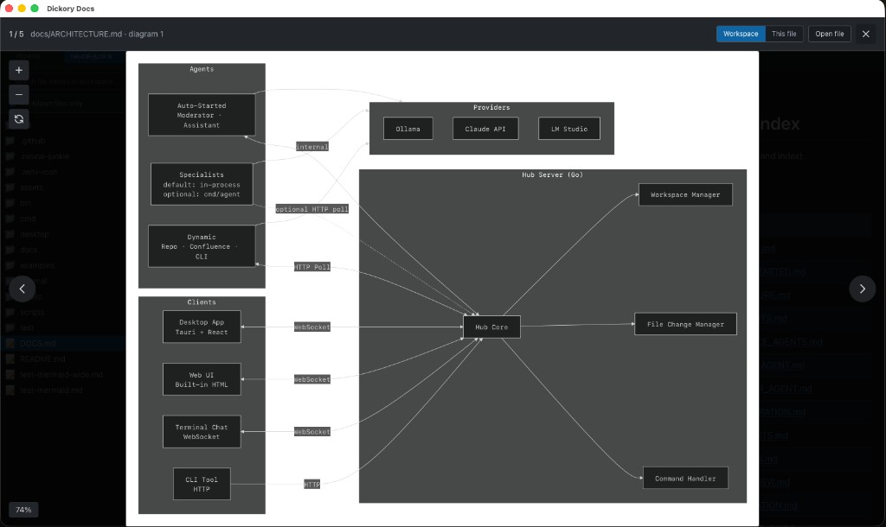

What was missing elsewhere
Typical Markdown previewers ignore Mermaid, render it inconsistently, or push you to paste code into a separate website. Architecture docs, RFCs, and READMEs increasingly embed ```mermaid blocks — you deserve a desktop app that treats them as first-class output.
How Dickory Docs renders diagrams
When you open a .md file, the app:
- Parses Markdown with marked and splits out fenced
mermaidsegments. - Renders each block to SVG via Mermaid 11 in the preview pane.
- Lets you click to expand any diagram into a modal when inline size is too cramped.
- Shows a clear error + retry if syntax is invalid — no silent blank boxes.
Surrounding prose still renders as HTML (sanitised with DOMPurify) so sequence charts stay next to the paragraphs that describe them.
Diagram types you can view
Anything Mermaid supports in your version — commonly flowcharts, sequence diagrams, class/ER diagrams, state machines, Gantt charts, and more. If it renders in Mermaid, Dickory Docs will attempt it from your fenced block.
Layout engines (dagre, ELK, tidy-tree)
Flowcharts use dagre by default (Mermaid’s built-in dagre-wrapper). Dickory Docs also bundles the official Mermaid 11 layout packages so opt-in layouts work from your Markdown — no paste into the live editor required.
- ELK — layered, stress, force, and other ELK variants for dense flowcharts. Use an init directive, YAML frontmatter, or
flowchart-elkas the diagram type. - Tidy-tree — bidirectional tree layout for mindmaps (
layout: tidy-treein frontmatter). - Dagre — default when you do not request ELK; also available explicitly via
defaultRenderer: dagre-wrapperordagre-d3.
Examples inside a fenced block:
%%{init: {"flowchart": {"defaultRenderer": "elk"}} }%%
flowchart TD
A --> B---
config:
layout: elk.stress
---
flowchart TD
A --> BTry the sample file samples/mermaid-layouts.md in the repo for all layout variants.
Markdown preview (the wrapper)
Mermaid lives inside real documents. The preview pane also extracts a document title for the window chrome ({title} · Dickory Docs) and tracks a content hash to skip redundant re-renders when the file has not changed.
TOC anchor links
Internal links like [Why](#why) in an Index section scroll to the matching heading. Headings get GitHub-style id attributes so RFCs and long READMEs navigate like they do on GitHub.
Find in document
Click Find in the preview toolbar or press ⌘F / Ctrl+F. Matches are highlighted in the rendered preview (and in plain-text files); Enter and Shift+Enter step through results.
Diagram gallery
Browse every ```mermaid block in the active workspace or the current file. Pan and zoom in the gallery; open the source Markdown from a thumbnail. Smoother zoom on macOS in v0.2.0 (no compositor smear when scaling diagrams).

Open from Finder (macOS)
Right-click a .md file → Open With → Dickory Docs. Fixed in v0.3.1 — see the macOS Open With guide for DMG selection and Gatekeeper tips.
Preview deep links
Jump straight to a diagram-bearing file with query parameters:
preview=trueworkspace={workspaceId}path={relativePath}